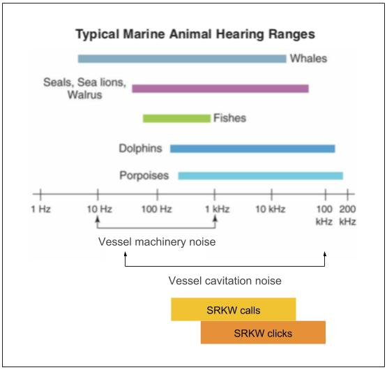

Orcamap: an open-source mapping system for endangered orcas

Scott Veirs, Orcasound hydrophone network
CUGOS Fall Fling Oct 6, 2019, at UW in Seattle
Orcasound
An evolving tool for SRKW conservation (& source of orca t,x,y data)

The product of 15 years of citizen scientists listening for whales, Orcasound is now a cooperative hydrophone network and an innovative open-source hardware/software project.
Orcasound 2019-2020 map and membership
Cooperative of researchers, educators, & citizen scientists
Physical exhibits include: Seattle Aquarium; Port Townsend Marine Science Center; Langley Whale Center; Lime Kiln Visitor's Center (via FOLKS) |

|
You can join Orcasound, too! Just e-sign the MOA and heed the Creative Commons BY-NC-SA license.
Orcasound software evolution
2017 challenge: Can we make it easy to listen, cloud-based, & scalable?
Free open-source software streams audio that "just works" on most (85% of) devices/browsers

- Linux, Docker
- ffmpeg -- encodes audio data in two formats:
- Compressed & lossy: HLS segments (HTTP Live Streaming)
- Compressed, lossless: FLAC (Free Lossless Audio Codec)
Data stored within Amazon S3 buckets
- s3fs -- uploads data files & "manifest" to Simple Storage Services (S3)
- FLAC filenames contain UTC timestamp
Demonstration #1 (notice static maps!)
Make “listening for whales” interactive & inform real-time end-users
For free live-listening, browse to: live.orcasound.net
 |
 |
 |
Orcasound 1.0 player published Nov. 1, 2018. Orcasound 2.0 is in beta-testing & will launch in fall, 2019.
Orcasound for tracking SRKWs
Cool tech: machine learning

Emerging orca AI (in real-time?):
- Orcasound's archive of train/test data
- Orcasound collaboration with UW and Microsoft with Dr. David Bain
- Ocean Networks Canada workshops in November
- Meridian's Keta (open-source)
- ORCA-SPOT (trained on Orca Lab NRKW calls)
- DFO+Google?
|
|
Emerging orca AI (in real-time?):
|
Orcasound as a partner in tracking SRKWs
Synergy of real-time sighting and listening networks
Most recent SRKW "hearing"

|
Orcasound for tracking SRKWs
Cool tech: new apps to help track marine life
 Upload a fluke photo; AI yields an ID! |
Members of the PSEMP Marine Mammal Work Group, and organizational members of Orcasound, will continue to study, test, and develop these apps and other pioneering ways to share marine mammal location data within Washington and across the Salish Sea. PSEMP Spatial Data Workshop, Oct. 31, Edmonds |
Potential impacts of noise on southern resident killer whales (SRKWs)
|
 Right whale stress fell after 9/11 decreased ship noise in 2001 (Rolland et al., 2012)
Right whale stress fell after 9/11 decreased ship noise in 2001 (Rolland et al., 2012)
|
Orcasound: as a partner in tracking SRKWs
Together we can detect & protect SRKW (with cool tech, like... Localization)
|
|
Mother-calf conversation! |
 |
|
| SRKWs "speak up" in noise from nearby boats (Holt, Noren, Veirs, Emmons & Veirs, 2009) |
2008: ASA talk by V.Veirs |
Orcasound for characterizing vessel noise
The bad news: Vessel noise can mask both calls & clicks

Frequencies of vessel noise overlap
|

Squeaky ship: |
/